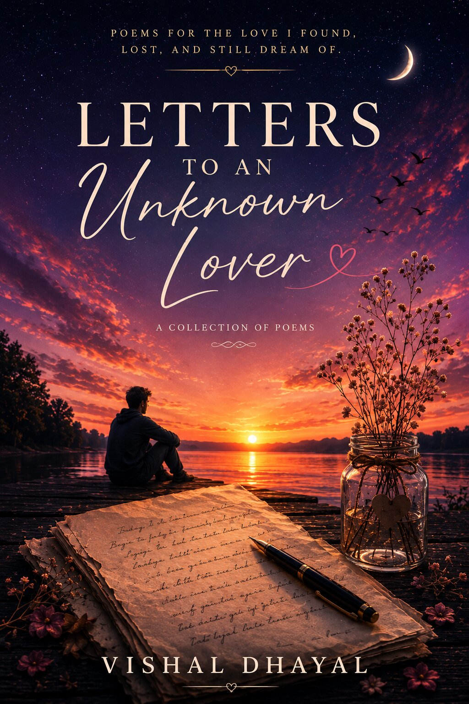
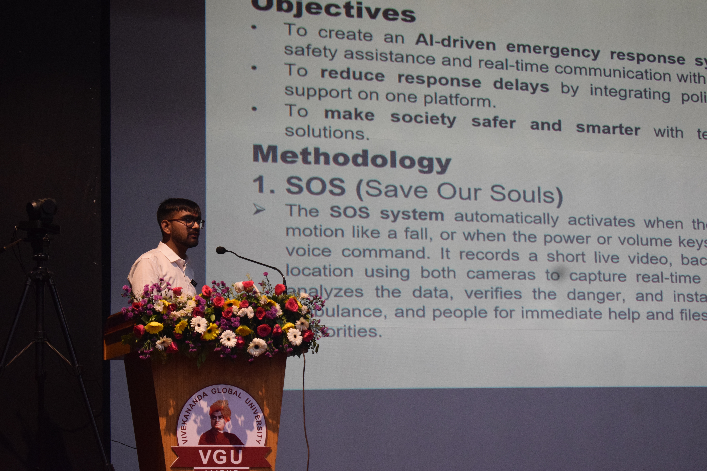
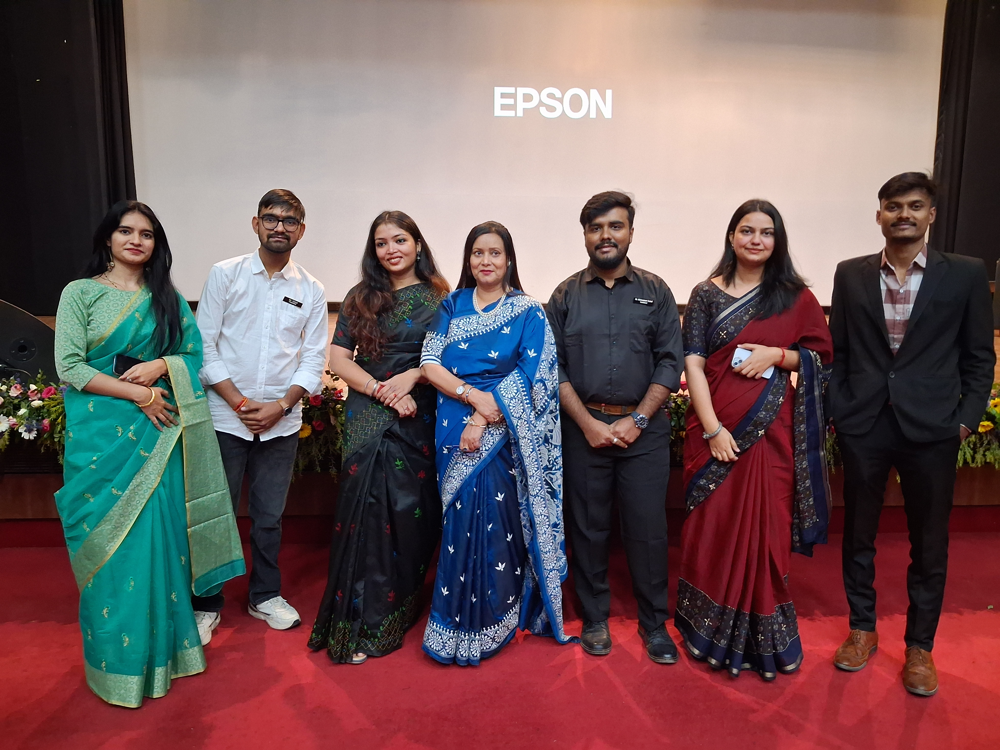
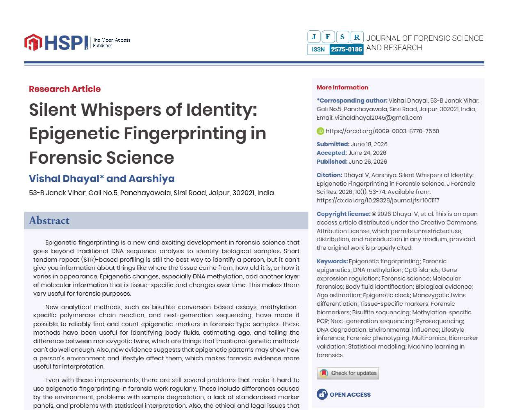

Crime and the Subconscious Mind: How Hidden Childhood Memories Trigger Violent Behaviour
Published review paper exploring the relationship between subconscious childhood memories and violent behaviour from a forensic perspective.
Official Portfolio
Forensic Science postgraduate researcher passionate about advancing forensic science through impactful research, scientific publications, innovative technologies, and educational initiatives. Dedicated to transforming ideas into practical solutions that contribute to the future of forensic investigation.
About Me
I am Vishal Dhayal, a postgraduate student pursuing an M.Sc. in Forensic Science at Vivekananda Global University, Jaipur. My academic journey is driven by curiosity, innovation, and a commitment to advancing forensic science through meaningful research and scientific exploration.
My work focuses on forensic biology, DNA analysis, forensic identification, emerging forensic technologies, scientific writing, and innovation. Alongside publishing research papers and authoring books, I strive to develop practical solutions that bridge the gap between academic research and real-world forensic applications.
I believe that science should not only answer today's questions but also inspire tomorrow's discoveries. My long-term vision is to contribute to forensic science through research, innovation, education, and interdisciplinary collaboration.
M.Sc. Forensic Science
Vivekananda Global University
Jaipur, Rajasthan, India
Research • Innovation • Publications
Research Interests
Biological evidence analysis and modern forensic applications.
Human identification and forensic genetics.
Emerging molecular approaches in forensic investigations.
Scientific evidence collection and interpretation.
Review articles, academic publications and research communication.
Innovation-driven solutions for modern forensic science.
Publications
Research publications contributing to forensic science and scientific literature.
Published review paper exploring the relationship between subconscious childhood memories and violent behaviour from a forensic perspective.
A review discussing the role of epigenetic fingerprinting in forensic identification and its future potential.
Books

A heartfelt collection of letters and poetry exploring love, longing, hope, imagination and emotions.
Buy BookProjects

Portable forensic centrifuge developed for efficient sample processing in field investigations.
Achievements
A journey of research, innovation, publications and continuous learning.
Published peer-reviewed review papers in forensic science.
Published books and continuing to write educational and creative works.
Developed the CENTRIGO portable centrifuge for forensic applications.
Continuously contributing to forensic science through research and learning.
Skills
Journey
Started postgraduate studies at Vivekananda Global University, Jaipur.
Published review papers in forensic science.
Published creative and academic writing.
Designed and developed a portable forensic centrifuge.
Gallery
A glimpse into my academic journey, research, conferences, projects and achievements.





Contact
Whether you are interested in research, collaborations, publications, speaking engagements, or simply wish to connect, feel free to reach out.
your-email@example.com
Jaipur, Rajasthan, India
Open for research collaborations and academic opportunities.